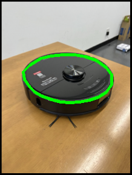

本アンケートは、早稲田大学の研究プロジェクトの一環として実施しています。
「言葉によるエンジニアリング」というテーマのもと、
人が言葉で評価する印象と形状の関係を明らかにすることを目的としています。
本研究以外の目的で個人情報を使用することはありません。
本研究の内容をご理解いただいた上で、ご同意いただける方のみご参加ください。
実施者：早稲田大学 情報生産システム研究科 荒川研究室 及位龍之介
This survey is conducted as part of a research project at Waseda University.
Under the theme of “Engineering through Words”, this study aims to clarify the relationship
between shape and human impressions expressed through language.
The collected data will be used solely for research purposes and will not be used for any other purpose.
Please participate in this survey only if you understand the purpose of the study and agree to the above.
Conducted by: Ryunosuke Oyoi, Arakawa Laboratory, Graduate School of Information, Production and Systems,
Waseda University

選択中： 0%